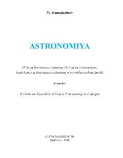

A111-sinf o'quvchilari uchun mo'ljallangan rasmiy astronomiya darsligi.
Mazkur darslik o'rta ta'lim muassasalarining 11-sinf o'quvchilari hamda o'rta maxsus, kasb-hunar ta'limi muassasalari uchun mo'ljallangan bo'lib, astronomiya fanining asoslari, koinot obyektlari va ularning fizik tabiatini o'rgatadi. Kitobda osmon jismlari, ularning harakatlari, evolyutsiyasi hamda astronomiyaning rivojlanish tarixi yoritilgan. Shuningdek, darslikda ixtisoslashtirilgan maktablar uchun qo'shimcha mavzular va kosmonavtika elementlari keltirilgan.